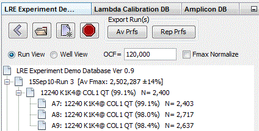
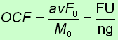
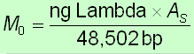

Note that it is necessary to manually enter an OCF into the experiment database window before the program is able to calculate the number of target molecules.

It is also important to note that an OCF is specific to how the amplification reactions are setup, that is, specific to the optics of an individual assay. Thus changing, for example, the enzyme formulation or the type of reaction vessel requires that a new OCF be determined, which also generally required a new experiment database to be created for analysis of data generated by this new setup.
Quick start using a crude OCF estimate: 5% of the run's average Fmax
Although this method is not generally recommended, empirical observation has
indicated that a lambda gDNA-derived OCF (see below) is often close to 5% of average Fmax
generated by the profiles within a run. The
demonstration experiment database provides a nice illustration,
in that 5% the average Fmax (~2.5x106) is
about 125,000, which is close to the average OCF generated by the
corresponding demonstration calibration database (~120,000).
Alternative quantitative standards
Although the ubiquitous nature of lambda gDNA makes it an attractive
choice for optical calibration, any DNA target of known quantity can be
used to derive an OCF. For example, profiles from a standard curve can
be used to determine an OCF, simply by importing the profiles into a new
experiment database and repeatedly entering OCF values until
correlation to the predicted target quantities are maximized. While
somewhat clumsy, this approach can provide insights into how the
application of an OCF impacts target quantification.
That is, while these approaches may introduce some error in absolute scale, this error is both linear and equally applied across all quantitative determinations. Thus, a 20% error in OCF generates an equivalent 20% error in all target quantifications to which this OCF is applied. As such, relative differences are not impacted by errors in OCF, and in general, such errors are small in relation to the interpretation of qPCR data. In gene expression profiling, for example, differences in transcript quantity of less than 1-fold are generally considered to have modest, if any, biological significance. Although it is certainly possible for an aberrant OCF to introduce such a large error, in practice such errors are uncommon.
Using lambda gDNA for generating an OCF
In combination with the calibration database window, an OCF is
generated by amplifying a known quantity of lambda gDNA using the lambda
primer-pair CAL1. Importantly, the amplification setup must be identical
to that used for sample amplification, which can be accomplished by
simply treating these reactions as an additional sample within a run.
Including calibration reactions into every run also provides a
convenient method for quality control, in that any aberrations in
reaction setup or instrumentation can be identified by aberrations in
both the kinetics of the resulting calibration profiles and in the OCF
values they produce.
The resulting amplification profiles are referred as "calibration profiles", which are processed within the calibration database window.
CAL1 5' primer: AGACGAATGCCAGGTCATCTGAAACAG
CAL1 3' primer: CTTTTGCTCTGCGATGCTGATACCG
Lambda gDNA is diluted with 10 mM Tris using siliconized microfuge tubes, to a final concentration of 100 femtograms per µl, which is equivalent to 1,876 genomes. Note that bulk preparations of 1000 femtogram of lambda gDNA that also includes a X10 concentration of primers (e.g. 5000 nM/µl for a 500 nM final concentration in a 10 µl reactions) can be used to standardize optical calibration over long time periods , in addition to providing a single source of calibration mix that can be applied to multiple instruments or reaction setups (e.g. different enzyme formulations).
A standard reaction setup that has been found to be effective, uses as a reaction volume of 10 µl containing 100 fg of lambda gDNA, amplified in a white plate sealed with film. Typically, four replicate CAL1 reactions are included in each run.
As described in the optical calibration explorer window overview, calibration profiles are stored in a dedicated database, from which an average OCF is derived from multiple runs. As described in the experiment explorer window overview, an average OCF is manually entered, which is then applied to all runs within the experiment database.
Mathematics
Optical calibration quantifies the fluorescence intensity of an assay based on the average F0 generated by a calibration profile using the equation:

M0 is equivalent to the mass of the amplicon region within the target expressed in nanograms of dsDNA, which for lambda is calculated using the equation:

where "ng Lambda" is the nanograms of lambda gDNA that was amplified, AS is the amplicon size and 48,502 bp is the genome size of lambda in base pairs.
As described in the optical calibration overview, an OCF is used to convert target quantities expressed in fluorescence units to the number of target molecules.